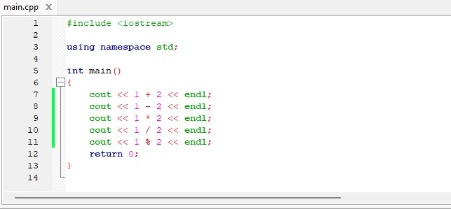
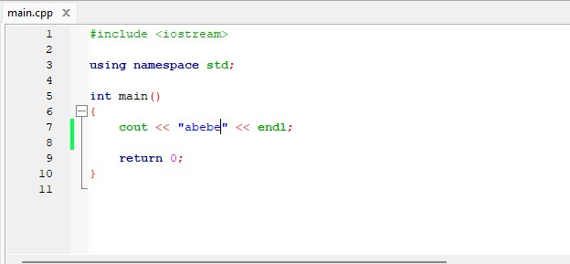
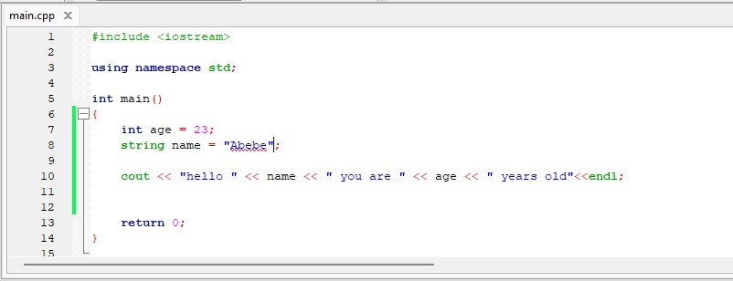
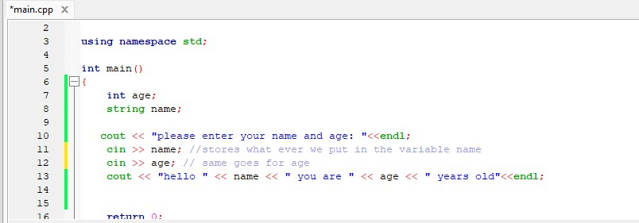
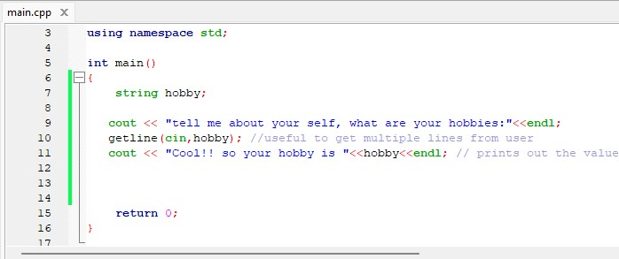

|
The “Hello World” program is the first step towards learning any programming language and is also one of
the simplest programs you will learn. All you have to do is display the message “Hello World” on the screen.
Let us now look at the program: |

|
Output |
Data types
- int
- The int keyword is used to indicate integers.
- Its size is usually 4 bytes. Meaning, it can store values from -2147483648 to 2147483647.
- float and double
- float and double are used to store floating-point numbers (decimals and exponentials).
- The size of float is 4 bytes and the size of double is 8 bytes. Hence, double has two times the precision of float. To learn more, visit C++ float and double.
- char
- Keyword char is used for characters.
- Its size is 1 byte.
- Characters in C++ are enclosed inside single quotes ' '.
- Wchar
- Wide character wchar_t is similar to the char data type, except its size is 2 bytes instead of 1.
- It is used to represent characters that require more memory to represent them than a single char.
- bool
- The bool data type has one of two possible values: true or false.
- Booleans are used in conditional statements and loops (which we will learn in later chapters).
Working with numbers
- In C++ working with numbers is easy the same math operation you use in school or at work can be used here.
- You can use a bunch of operators like addition '+', subtraction '-', multiplication '*', division '/' and modulus '%'.
- check out the example on the screen, you can see the operations on the screen. And the output is as follows
- You can see here that 1 + 2 will equal 3 and 1 - 2 will equal -1...
- Note that when you divide 1 / 2 the output will be zero take a second to answer why.... the reason this happend is the '/' operator divides the numbers and only takes the integer it does not consider numbers after the decimal point.
Working with strings
- Strings in C++ are like arrays of characters stored in a consecutive way (you dont have to know about arrays we'll see on the coming tutorials)
- You can see that to print out strings we use double quotes "" to guard the string
- When trying to print or store a string what ever we put in the double quotes "" gets printed no matter what it is.
- As you can see C++ provides a lot of varaites when using strings
- You can copy one string to another, you can also concatenate and more...check the table
Variables
- Varibales in C++ are used to store to be used later
- Instead of writing our values each and every time we use variables to make things easier
- You can easily keep track of your values
- To store a value in a variable you first need to specify the data type the your variable name after that you can assign it a value.
- {Data type} {variable-name} = {value};
- see the screen to the right
- We choose a data type (int) then the variable name (age) and the value(23)
How to get user input
- To get user input we use the keyword 'cin'
- its used as cin >> {variable}; Note that we use '>>' instead of '<<' for cin
- There is also another way of getting a user input we use 'getline'
- can be used as getline(cin,{variable});
- You can say it is used together with cin

|
|
|  |
|

|
|
|  |
|


|
|
|
|
 |
| Output |

|
|
|
 |
| Output |

|
|
|
 |
| Output |

|